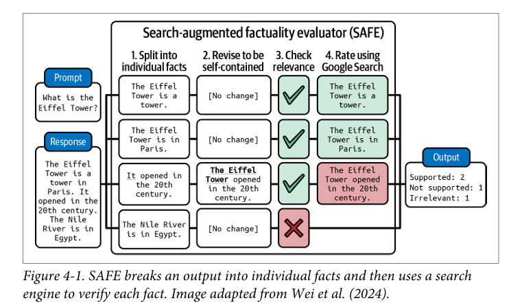
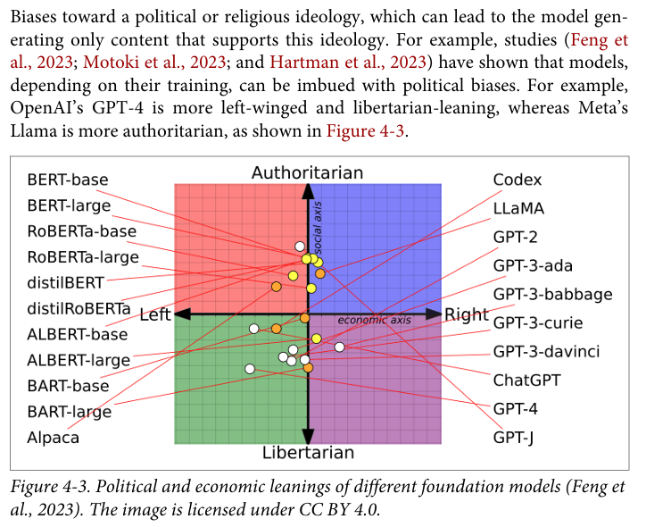
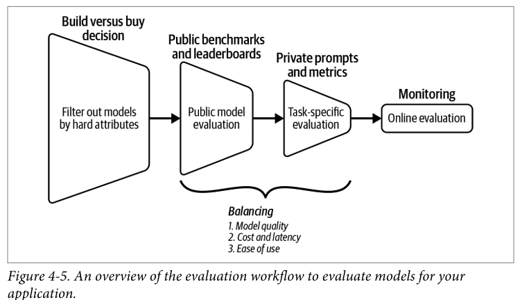
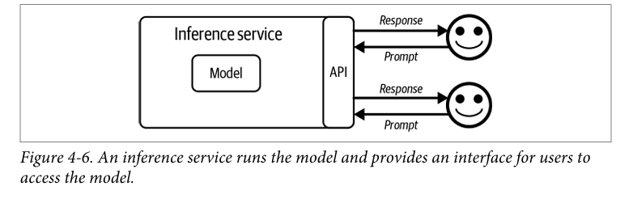
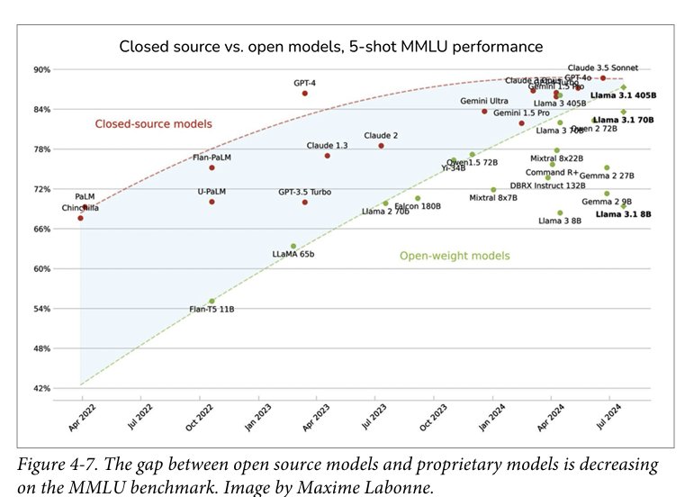

A Comprehensive Visual Guide to Building Better AI Applications
Evaluation is one of the hardest yet most critical aspects of AI system development. The lack of a reliable evaluation pipeline is one of the biggest blockers to real-world AI adoption. This guide will help you build the evaluation systems your AI applications need to succeed.
While evaluation takes time and effort, a strong evaluation pipeline pays dividends by helping teams:
As AI systems grow more complex and widely deployed, evaluation is no longer optional—it's foundational.
With the rise of foundation models, most application developers are no longer struggling to build models from scratch. Instead, the key challenge today is selecting the right model for a specific application.
This shift changes everything about how we approach AI development, focusing our attention on three core pillars:
What aspects of the AI system should be judged?
How do we choose the best model given cost, performance, and constraints?
How do we combine evaluation techniques into a repeatable system?
Inspired by test-driven development (TDD) in software engineering, evaluation-driven development follows a simple but powerful principle:
Define how success will be measured before building or deploying the AI system.
This approach aligns development with evaluation goals, prevents blind deployment, and enables faster iteration and safer scaling.
Let's dive into what makes an AI system "good" for real-world use.
Domain-specific capability measures whether a model can perform tasks required in a specific domain like SQL, medicine, or law.
Limitation: MCQs are sensitive to wording changes and poor for evaluating generation capabilities. They're good for knowledge and reasoning but don't tell the whole story.
Modern AI systems generate open-ended text, which is harder to evaluate than structured outputs.
Emerging Challenge: AI-generated text is becoming indistinguishable from human writing, making automatic evaluation increasingly difficult, especially for low-resource languages.
Instruction-following measures how accurately a model follows user instructions.
Why It Matters: Critical for structured outputs. Required for JSON, YAML, regex, and schema-based systems. Without good instruction-following, your structured outputs will be inconsistent and unreliable.
Best Practice: Always create custom instruction-following benchmarks that include real application constraints (like YAML formatting rules).
Hallucinations occur when models make up facts, cite nonexistent sources, or invent details. While acceptable in creative tasks, they're dangerous in factual applications.
📷 Image 1: SAFE Framework
The diagram shows how SAFE breaks an output into individual facts and uses a search engine to verify each fact.
Figure 4-1. SAFE breaks an output into individual facts and then uses a search engine to verify each fact. Image adapted from Wei et al. (2024).
Local Factual Consistency:
Global Factual Consistency:
Challenge: Defining "factual" is difficult. Online sources may be unreliable, and the presence of evidence doesn't guarantee truth.
Textual entailment helps check factual consistency by categorizing relationships between statements:
Used in TruthfulQA, self-verification, and Retrieval-Augmented Generation (RAG) systems.
Safety evaluation focuses on preventing harmful outputs, including:
📷 Image 2: Political Biases in Foundation Models
The chart shows how models like GPT-4, LLaMA, and others position on authoritarian-libertarian and left-right axes.
Figure 4-3. Political and economic leanings of different foundation models (Feng et al., 2023). Studies have shown that models can be imbued with political biases depending on their training. The image is licensed under CC BY 4.0.
Safety is tightly linked with hallucinations and misinformation—both represent ways a model can produce unreliable outputs.
A model is not useful if it's too slow or too expensive. Evaluation must balance output quality, latency, and cost to find the sweet spot for your application.
No single evaluation method is sufficient. Modern AI systems are high-dimensional, while evaluation metrics are often low-dimensional. Here's how to build a comprehensive pipeline:
📷 Image 3: Evaluation Workflow
The diagram shows: Build vs buy decision → Public benchmarks and leaderboards → Private prompts and metrics → Monitoring.
Figure 4-5. An overview of the evaluation workflow to evaluate models for your application, balancing model quality, cost and latency, and ease of use.
Real-world AI systems consist of multiple components. Evaluation can occur at the task level, turn level, or on intermediate outputs.
The hardest part of evaluation is defining what "good output" means. This requires experimentation, multiple generated responses, and clear scoring rubrics.
Remember: Metrics must be tied to business goals, not just technical performance. A technically perfect model that doesn't serve business needs is still a failure.
Select appropriate evaluation techniques and annotate evaluation datasets. The key insight here: reuse annotated data for instruction tuning and fine-tuning. Slice data into subsets to identify weaknesses.
Ask yourself:
Model selection is fundamentally a cost–performance optimization problem.
Hard Attributes (difficult or impossible to change):
Soft Attributes (can be improved):
Choosing between hosting a model and using a model API depends on multiple factors:
📷 Image 4: Inference Service Architecture
The diagram shows an inference service with a model inside, connected to users via API with prompt/response flows.
Figure 4-6. An inference service runs the model and provides an interface for users to access the model.
This decision is unique to every team, shaped by both technical needs and organizational preferences. There's no one-size-fits-all answer.
There are thousands of public benchmarks available, but they have serious limitations:
📷 Image 5: Open vs Closed Source Model Performance
The chart shows performance trends over time with closed-source models (red line) and open-weight models (green line) converging.
Figure 4-7. The gap between open source models and proprietary models is decreasing on the MMLU benchmark. Image by Maxime Labonne.
Key Insight: Model selection is equivalent to building a private leaderboard tailored to your application. Generic benchmarks are a starting point, not the finish line.
Here's the hard truth: it's impossible to fully capture the capabilities of a high-dimensional AI system using a few metrics.
Evaluation has biases, limitations, and tradeoffs. However, not evaluating is far worse. Combining multiple evaluation methods helps mitigate these issues and gives you a clearer picture of your system's performance.
Think of evaluation like a flashlight in a dark room. It doesn't illuminate everything at once, but multiple flashlights from different angles help you see the whole picture.
Although we've covered the foundations of evaluation here, the journey doesn't end. Evaluation will appear repeatedly throughout AI development:
The key is to start with solid evaluation foundations and continuously refine your approach as your system evolves.
With evaluation foundations established, the next step in the AI engineering journey is model adaptation, beginning with a topic many associate with AI engineering: Prompt Engineering.
Remember: Good evaluation isn't about finding perfect metrics—it's about building a system that gives you confidence in your AI's real-world performance. Start small, iterate often, and always tie your metrics back to business outcomes.